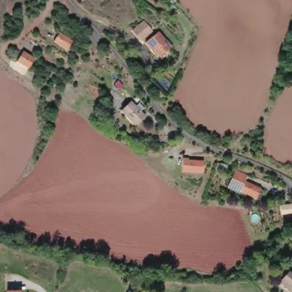
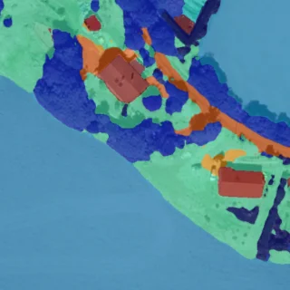
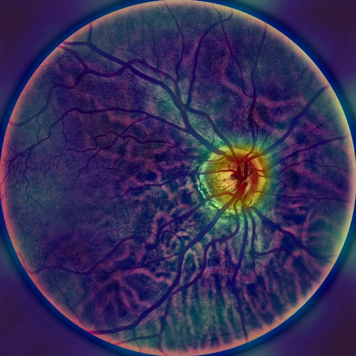

Hierarchical representations for brain modeling
I designed an EEG encoder that compresses a recording in stages and keeps a separate readout at each one: fine spatial and temporal patterns in the early stages, global semantics in the deeper ones.
I build models that read brain signals and images at several scales at once.
I am a research scientist intern at reaDream, where I work toward decoding dream content from sleep EEG. I recently finished a Master’s in Data Science at EPFL, with my thesis in the Fluid Interfaces group at the MIT Media Lab.
Before that I worked on vision transformers for satellite and medical imagery, taught deep learning at EPFL, and spent six months building product features and an LLM contract-review tool at LegalPass.
I designed an EEG encoder that compresses a recording in stages and keeps a separate readout at each one: fine spatial and temporal patterns in the early stages, global semantics in the deeper ones.
CASWiT (Context-Aware Stage-Wise Transformer) is a memory-efficient transformer for ultra-high-resolution images. One branch sees a downsampled view of the surrounding area and passes that context, stage by stage, to a second branch that works on high-resolution patches. With self-supervised pretraining it reaches state of the art on four large benchmarks across satellite and medical imagery: FLAIR-HUB, URUR, ISIC and CRAIG.



A vision transformer that screens fundus photographs for glaucoma, with anatomical priors taken from optic disc and retinal vessel segmentation. Its attention concentrates on the optic disc and the vessels around it. I built the full machine learning pipeline as the only engineer on a clinical team.



It turns a text prompt into a Godot game, then certifies the game by finding a winning play and replaying it. In six days it certified 169 games.
I train contrastive models that align REM-sleep EEG with waking visual-imagery EEG in a shared embedding space, as a step toward decoding dream content from sleep recordings. I am also testing high-frequency EEG as encoder input, to capture the fine visual detail the two states share.
I shipped full-stack features in weekly production sprints through a launch that reached more than 100 clients, and built an LLM contract-review system that flags predatory clauses. It has a rollback mechanism for human validation and was refined daily with in-house lawyers to fit client needs and Swiss legal requirements.
I taught multi-modal architectures, transformers and attention to 40 master’s students in weekly coding sessions, and supervised capstone projects on autonomous driving models, including data augmentation and trajectory prediction.
I played football for eleven years as a center-back at the pre-national level, won three Alsace championships, and more recently won the Swiss university Student Games with EPFL. I have also been ranked first in the world on Vel’Koz, a League of Legends champion, and reached a skill rating of 4850 in Overwatch.